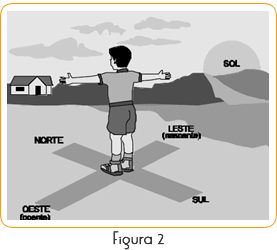
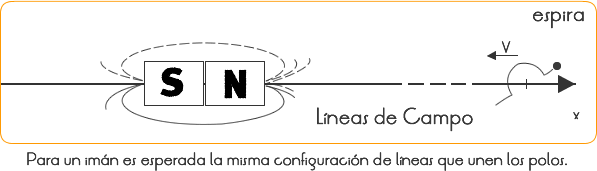

Un imán (del francés aimant) es un cuerpo o dispositivo con un campo magnético significativo, de forma que tiende a alinearse con otros imanes (por ejemplo, con el campo magnético terrestre).
Los imanes pueden ser imanes naturales, como la magnetita, un óxido de hierro (Fe3O4) con propiedades magnéticas.
Un imán artificial es un cuerpo de material ferro magnético al que se ha comunicado la propiedad del magnetismo, bien mediante frotamiento con un imán natural, bien por la acción de corrientes eléctricas aplicadas en forma conveniente (electroimanación).
Un imán permanente está fabricado en acero imanado (hierro con un alto contenido en carbono), lo que hace que conserve su poder magnético. Sin embargo, una fuerte carga eléctrica, un impacto de gran magnitud, o la aplicación de una elevada cantidad de calor, puede causar que el imán pierda su fuerza actuante.
Los imanes pueden ser imanes temporales, es decir, que pierden sus propiedades una vez que cesa la causa que provoca el magnetismo, o, permanentes. Dichos imanes están fabricados en hierro dulce (con un contenido muy bajo en carbono).
Un electroimán es una bobina (en el caso mínimo, una espira) por la cual circula corriente eléctrica. Esto genera un campo magnético isomórfico al de un imán de barra que imanta el imán. Un electroimán es un caso particular de un imán temporal.
Comprobar la Ley de Atracción y Repulsión Magnética existente entre los polos de los imanes; identificar los materiales ferro magnéticos; como también comprobar las líneas de campo producidas por el imán.
Procedimientos
PARTE l: COMPROBACIÓN DE LAS LEYES DE ATRACCIÓN Y REPULSIÓN MAGNÉTICA
1) Determine la extremidad norte, de la aguja de la brújula, con las coordenadas geográficas locales.
2) Sujete un imán en la mano y compruebe, cual de sus lados, atrae la extremidad Norte de la brújula. Etiquete este lado del imán como Polo Sur (S)
3) Repita la operación del ítem 2 para los imanes restantes.
4) Etiquete los lados restantes, como Polo Norte (N) con todos los lados Sur de los imanes identificados.
5) Sujete cualquier uno de los imanes restantes en las manos. Elija uno de los polos de este imán y aproxímelo a los otros polos semejantes, que ocurre en los imanes restantes.
6) Aproxime uno de los polos de éste a todos los polos, con el mismo imán, y observe que ocurre en los imanes restantes.
7) Responda la PARTE l del cuestionario.
PARTE ll: IDENTIFICACIÓN DE LOS MATERIALES FERROMAGNÉTICOS
1) Aproxime uno de los imanes a los materiales sugeridos en la lista. Verificar los que son atraídos.
2) Responda la PARTE ll del cuestionario.
PARTE lll: ESTUDIO DE LAS LÍNEAS DE CAMPO MAGNÉTICO
1) Asocie los cuatro imanes, de modo que se atraigan.
2) Monte la configuración.
3) Salpicar limadura de fierro fina (cerneada) sobre toda el área de la hoja de papel.
4) Producir con el dedo pequeños golpes mecánicos en la bandeja, para mejor acomodar la limadura de fierro.
Cuestionario
PARTE I
1) ¿Cuál polo del imán prueba que fue usado en el ítem 5, Parte l de los Procedimientos? ¿Lo qué fue observado al aproximarlo de los polos semejantes ocurridos en los otros imanes?
2) ¿Cuál polo del imán prueba fue usado en el ítem 6, de la Parte l de los
3) Procedimientos? ¿Lo qué fue observado al aproximarlo de los polos diferentes ocurridos en los otros imanes?
4) Citar una ley general para la atracción y repulsión magnética, que ocurre entre los polos de los imanes?
PARTE II
1) Separe los materiales atraídos por el imán.
2) ¿Todos los metales fueron atraídos? Si alguno no fue atraído, explique el fenómeno.
PARTE III
1) Dibuje la figura obtenida para las líneas de campo magnético de la asociación de los imanes.
2) ¿Cuál es la figura esperada para apenas un imán?
Comentarios
PARTE I
Determinación del Polo Norte de la Aguja de la Brújula: Guiar los alumnos para fuera del salón, mostrar donde el sol nace y asocie partes del cuerpo a los puntos cardinales como sigue en la Figura 2:

(N) Norte: indicado por la nariz del alumno.
(S) Sur: indicado por la espalda del alumno.
(E) Este: indicado por el brazo derecho del alumno.
(O) Oeste: indicado por el brazo izquierdo del alumno.
La aguja de la brújula es dividida en dos mitades de colores diferentes. Compruebe cual de ellas apunta para el Norte geográfico. Con esto está determinando el Norte magnético de la brújula.
Luego de realizar los ejercicios 2, 3, 4, 5 y 6, se espera que sea comprobada la siguiente ley "Polos magnéticos semejantes se repelen de la misma forma que polos magnéticos diferentes se atraen mutuamente.
PARTE II
Materiales Ferro magnéticos: No todos los metales son atraídos por los imanes. El cobre, el acero inoxidable y el aluminio son ejemplos de materiales no ferro magnéticos.
Sin embargo, el Fe, Ni, Co, Gd, Dg y algunas de sus ligas son atraídas porque sus partículas se magnetizan, tendiendo a orientarse según las líneas de campo, producidas por el imán próximo al material. Constituyen, así, ejemplos de materiales ferros magnéticos.
Las partículas de esos materiales se comportan como pequeñas brújulas, que se alinean según el campo magnético del imán. En el caso de los materiales no ferro magnéticos, las partículas no se alinean, por lo tanto, se magnetizan y el material no es atraído.
PARTE III
Líneas de Campo: La práctica muestra que la actividad magnética más intensa ocurre en los polos del imán. Esto es comprobado, pues la limadura de fierro se concentra en los polos y es más desparramada en las regiones más distantes.
Una asociación de imanes produce la siguiente configuración de líneas que nacen en el Polo Norte y terminan en el Polo Sur.
